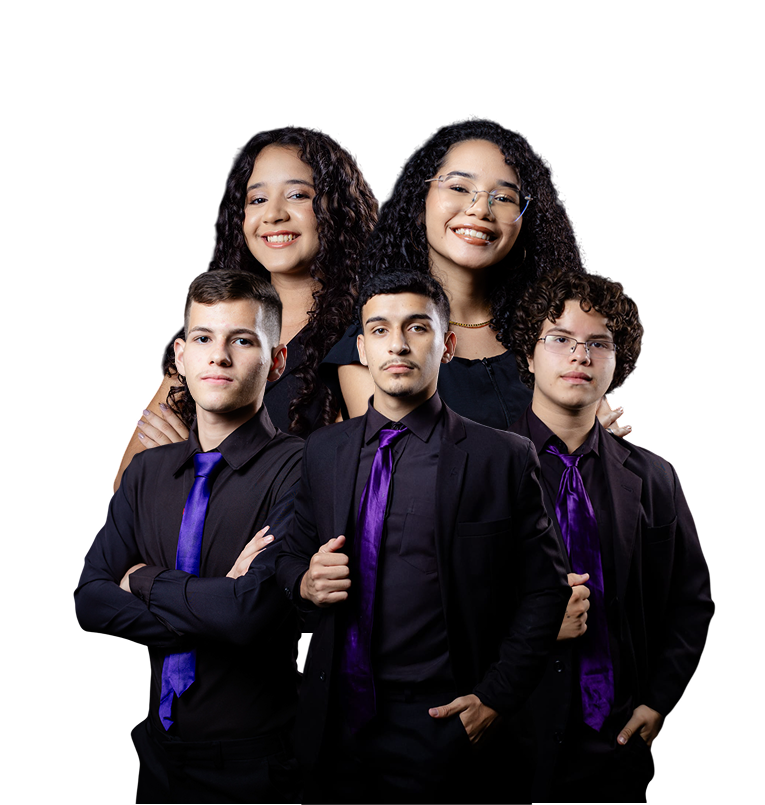
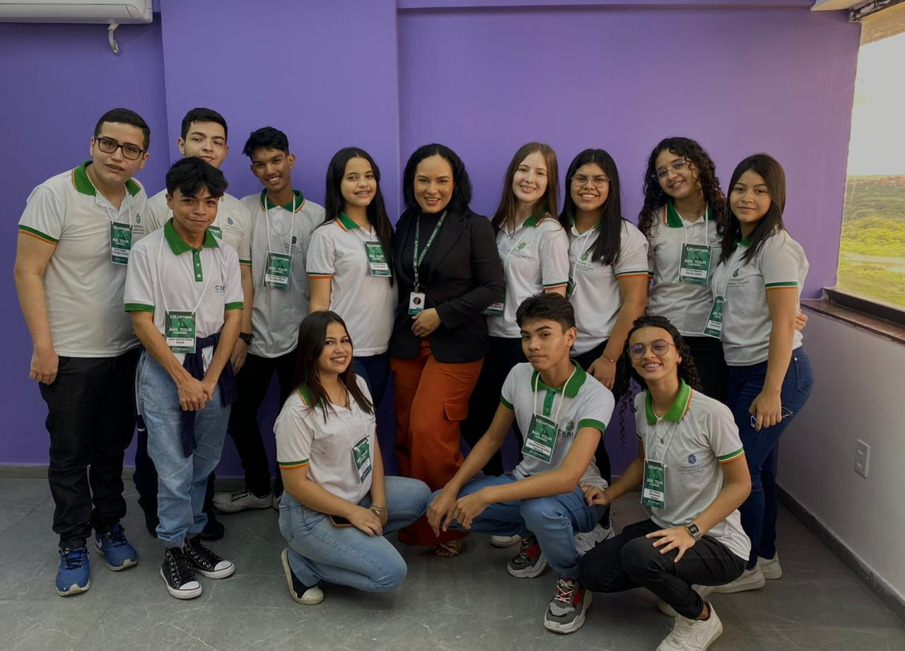
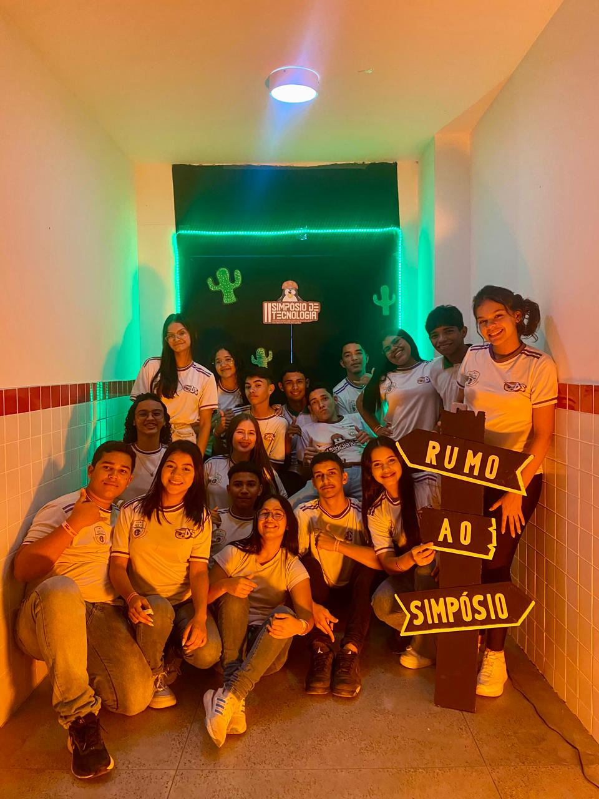
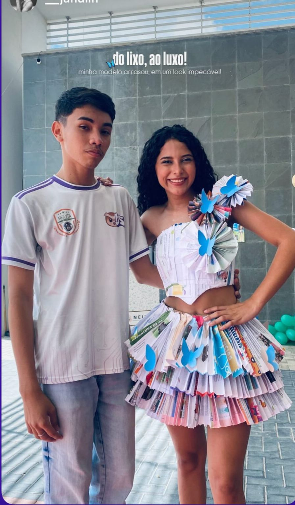
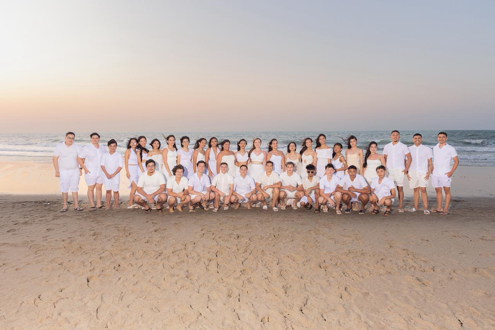
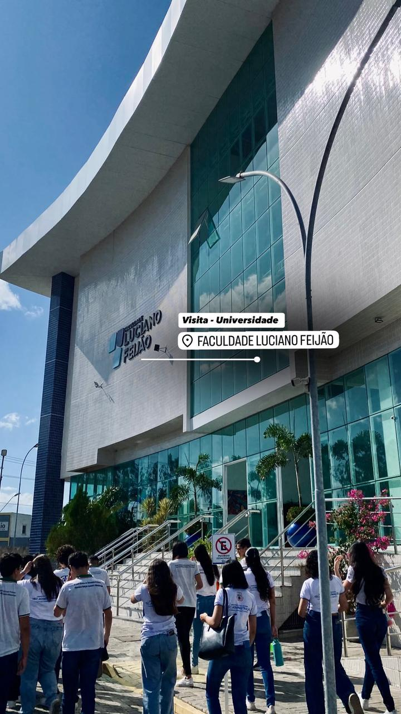
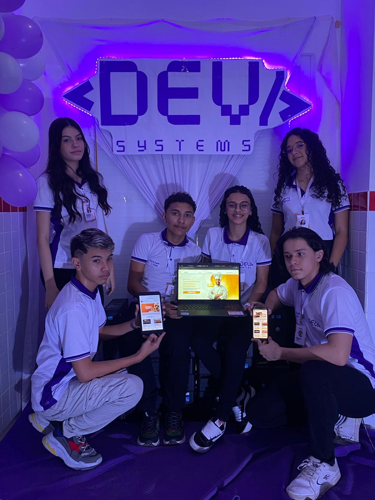
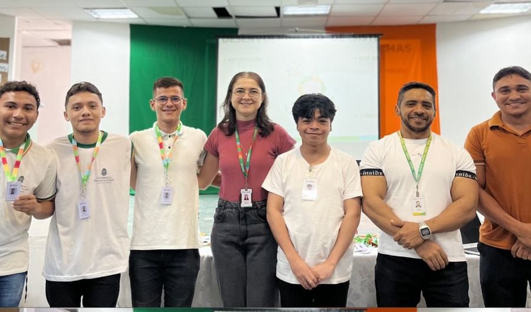
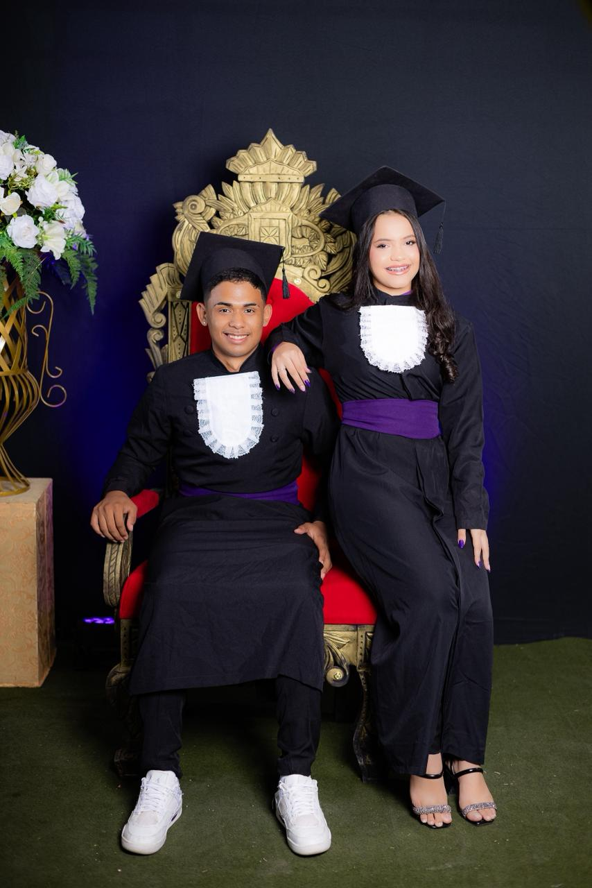

Aqui começa sua visão pro futuro.
Construa hoje a base do futuro que você imagina, criando ideias, caminhos e oportunidades que irão transformar a sua jornada.

Construa hoje a base do futuro que você imagina, criando ideias, caminhos e oportunidades que irão transformar a sua jornada.

Se você gosta de criatividade, inovação e tecnologia, o curso de Desenvolvimento de Sistemas
é o lugar perfeito para transformar ideias em realidade.
Tecnologias do Futuro:
Aprenda o que as empresas realmente usam.
Aprenda suporte técnico de forma prática,
clara e do jeito certo.
transforme ideias em interfaces
modernas e funcionais.
Profissionais experientes, apaixonados por tecnologia e preparados para >
guiar você do zero ao avançado.
Professora
Experiência com front-end, back-end e bancos de dados. Trabalhou em empresas reais.
Professora
Experiência com front-end, back-end e bancos de dados. Trabalhou em empresas reais.
Acompanhe nossas viagens técnicas, eventos marcantes e experiências que
mostram nossa evolução dentro e fora da sala de aula.
Viagem técnica para conhecer a UXSoftware, empresa renomada no mercado de programação e referência em inovação.

Nossa participação no Simpósio de Tecnologia proporcionou experiências práticas e momentos que impulsionam nossa evolução acadêmica.

O Desfile Ecológico proporcionou experiências marcantes e momentos que promovem aprendizado e consciência ambiental.

Nas fotos externas na praia, registramos momentos especiais que refletem nossa trajetória e experiências marcantes da jornada.

Nossa visita técnica à Faculdade Luciano Feijão trouxe experiências práticas e momentos que impulsionam nossa evolução.

A I Amostra de Tecnologia e Inovação proporcionou experiências práticas e momentos que fortalecem nosso aprendizado.

Na Cerimônia de Entrega dos Crachás, vivenciamos momentos especiais que marcam nosso início e fortalecem nossa evolução na jornada acadêmica.

Nas fotos em estúdio com a beca, registramos momentos especiais e celebramos nossas conquistas acadêmicas.

embarque nessa jornada e descubra experiências, aprendizados e desafios
que vão transformar seu futuro.